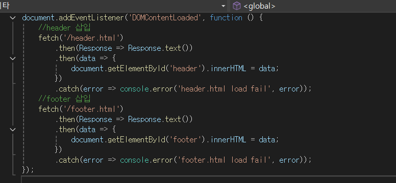

깃허브 블로그 만들기 Part 3
2024.12.14
1. HTML 파일을 템플릿 형식으로 분리하기
여러 페이지에서 공용으로 사용할 수 있는 부분을 재사용하기 위해서 분리한다1-1. header.html과 footer.html을 작성 후, 불러올 JavaScript 코드를 작성
예시 js코드
예시 html코드
<body>
<div id="header"></div>
<main>
본문
</main>
<div id="footer"></div>
<script src="js/includehtml.js"></script>
</body>